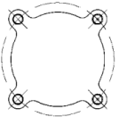
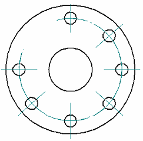
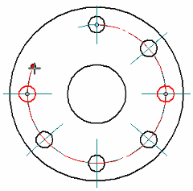

Bolt Hole Circle command
Bolt Hole Circle command
Places a bolt hole circle annotation, which is made up of a series of arcs with radial center marks.

Placing a bolt hole circle annotation
The Bolt Hole Circle command bar specifies the method for creating the bolt hole circle annotation. You can define it using two points, three points, or a center point and radius.
You also can open the Bolt Hole Circle Properties dialog box to specify the types of elements (circles, arcs, hidden lines) that you want to apply center marks to in the bolt hole circle annotation. For example, you can use the Arc option to ensure that bolt hole circles that are split by other features are included in the bolt hole circle, and that center marks are placed on them.
Adding and removing center marks in a bolt hole circle
You can select an existing bolt hole circle, and then use the Add/Remove Element option on the Bolt Hole Circle command bar to add missing center marks to, or remove unwanted center marks from, elements in the bolt hole circle annotation.
Defining a partial bolt hole circle
When you place a bolt hole circle, you can select the Trim option on the command bar to define a bolt hole circle that is less than 360 degrees. This option alters the bolt hole circle creation workflow so that you are prompted to click the portions of the bolt hole circle that you want to trim away. The arc segment that is nearest your cursor is the portion that is removed.

After trimming, you can do either of the following to modify a partial bolt hole circle:
-
You can drag the round edit handles to adjust the length of the trimmed circle. The edit handles appear as solid dots at both ends of the circle segment.

-
You can restore the full bolt hole circle by selecting the partial circle segment and then deselecting the Trim button on the Edit Definition command bar.
You can select the Properties button on the command bar to modify the formatting of the bolt hole circle annotation. In the Bolt Hole Circle Properties dialog box, you can change:
-
Bolt hole circle color
-
Line type and width
-
Center mark size
How do I
Automatically create centerlines and center marks in a drawing viewAutomatically remove centerlines and center marks from a drawing view
Place a center mark
Place a centerline midway between two lines
Place a centerline on a slot
Place a center axis on a cylinder or hole feature
Example: Dimension a curved slot
Place a bolt hole circle
Learn more
Centerlines, center marks, and bolt hole circlesLook up more details
Automatic Centerlines commandAutomatic Centerlines command bar
Centerline and Center Mark Options dialog box
Center Mark command
Center Mark command bar
Centerline command
Centerline command bar
Center Line and Center Mark Properties dialog box
Bolt Hole Circle command bar
Bolt Hole Circle Properties dialog box